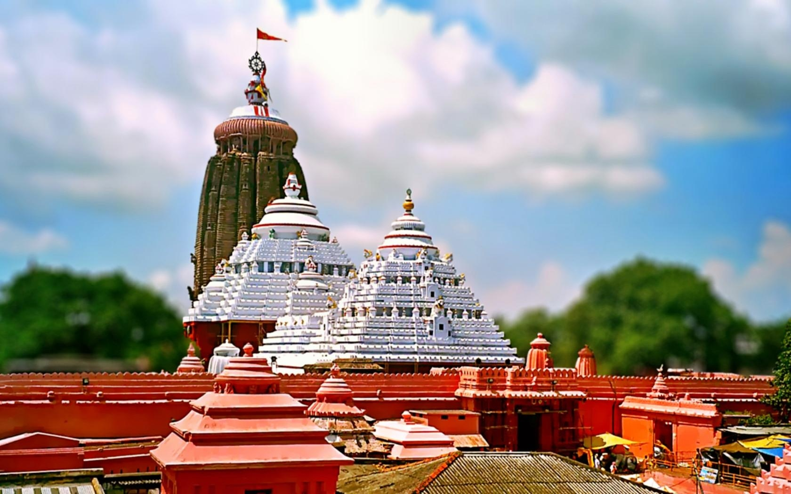
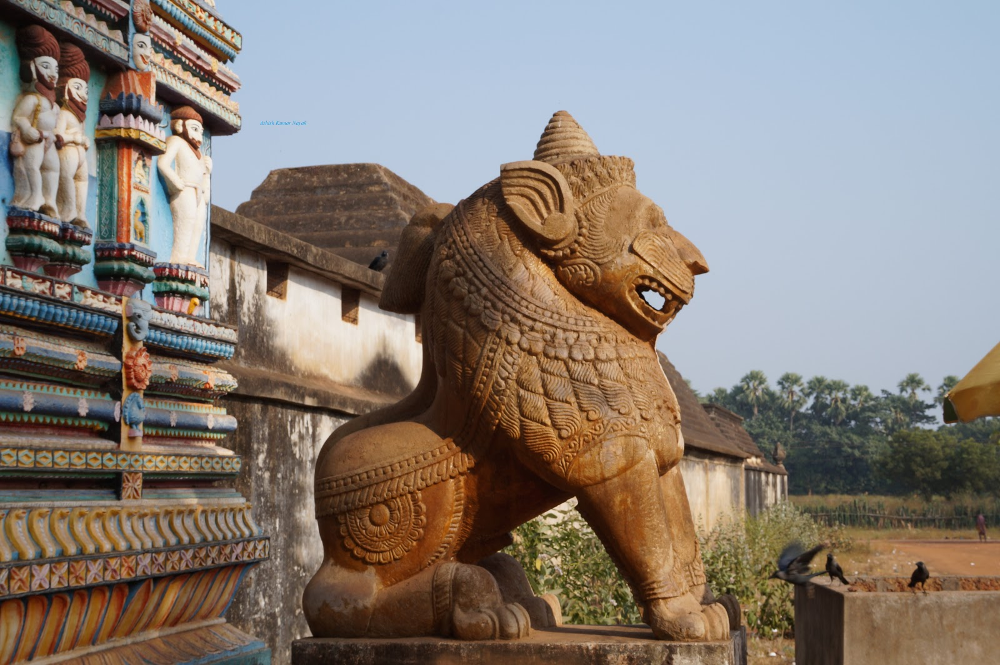
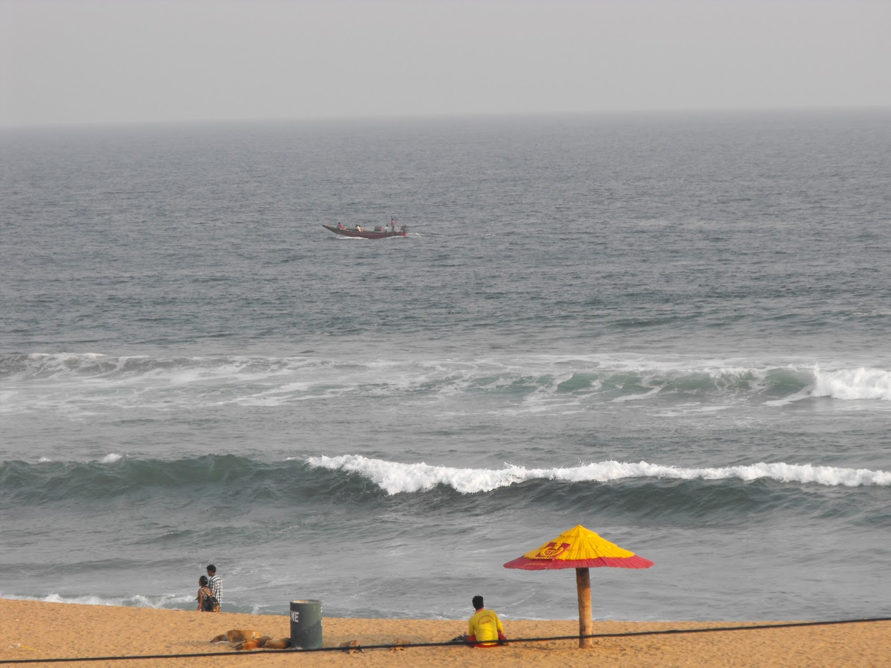

Odisha or Orissa is one of the 29 states of India, located in eastern India. It is surrounded by the states of West Bengal to the north-east, Jharkhand to the north, Chhattisgarh to the west and north-west, and Andhra Pradesh to the south. Odisha has 485 kilometres (301 mi) of coastline along the Bay of Bengal on its east, from Balasore to Ganjam.[10] It is the 9th largest state by area, and the 11th largest by population. It is also the 3rd most populous state of India in terms of tribal population.[11] Odia (formerly known as Oriya)[12] is the official and most widely spoken language, spoken by 33.2 million according to the 2001 Census.[13]
Location of Odisha
Odisha Map
Lord Jagannath
Jagannath (Odia: ଜଗନ୍ନାଥ, IAST: Jagannātha, or Jagannatha) literally means "Lord of the Universe" and is a deity worshipped in regional traditions of Hinduism and Buddhism in India and Bangladesh. Jagannath is considered a form of Vishnu.[1] He is a part of a triad along with his brother Balabhadra and sister Subhadra. To some Vaishnava Hindus, Jagannath is an abstract representation of Krishna; to some Shaiva and Shakta Hindus, he is a symmetry-filled tantric representation of Bhairava; to some Buddhists, he is symbolism for Buddha in the Buddha-Sangha-Dhamma triad; to some Jains, his name and his festive rituals are derived from Jeenanath of Jainism tradition.
Badua_pani_Image
Suna Bhesa
Lord Jagannath Temple
Famous Car Festival
Famous Temples Of Odisha
The capital city of Odisha, Bhubaneswar has its origins more than 3000 years in the past. A well-planned city, Bhubaneswar is on the fast-lane of development and is emerging as an information and technology hub. The beautiful city has many ancient temples that are renowned for their architectural finesse and artistic beauty. Over 1000 temples are said to have decorated the city in the past, this has earned Bhubaneswar the tag of 'The Temple City of India'. Among the most popular tourist destinations in eastern India, the city of Bhubaneswar has much to offer travellers. You can explore the many interesting temples, caves, city of ruins and wildlife here. Take a look at some of the top places to visit in Bhubaneswar.


Jagannth Temple
Jagannth Temple
Jagannth Temple
Rath Yatra
Dhauli Temple
Dhauli Temple
Dhauli Temple View
Ram Mandir
Konark Temple
Konark Temple Wheel
Lingaraj Temple Flag
Lingaraj Temple
Smart City
Bhubaneswar, also spelt as Bhubaneshwar or Bhuvanēśvar (/ˌbʊbəˈneɪʃwər/ (About this sound listen)), is the capital of the Indian state of Odisha. It is the largest city in Odisha and is a centre of economic and religious importance in Eastern India.
Smart City
Night View
IT Hub
Bhubaneswar Airport
Beautiful Sea Beaches
Puri Beach is a beach in the city of Puri in the state of Odisha, India. It is on the shore of the Bay of Bengal. It is known for being a tourist attraction and a Hindu sacred place.[1][2] The beach is the site of the annual Puri Beach Festival, which is co-sponsored by the Indian Ministry of Tourism, the city of Odisha, the Development Commissioner of Handicrafts, and the Eastern Zonal Cultural Center, Kolkata.[3] The beach hosts sand art displays, including work by international award-winning localsand artist Sudarshan Pattnaik.

Popular Persons
This is a list of people from or who live in Odisha, India.